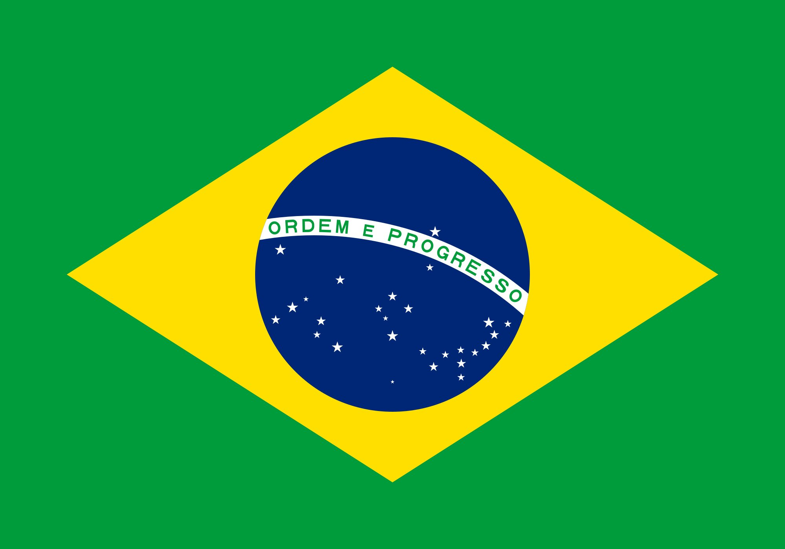
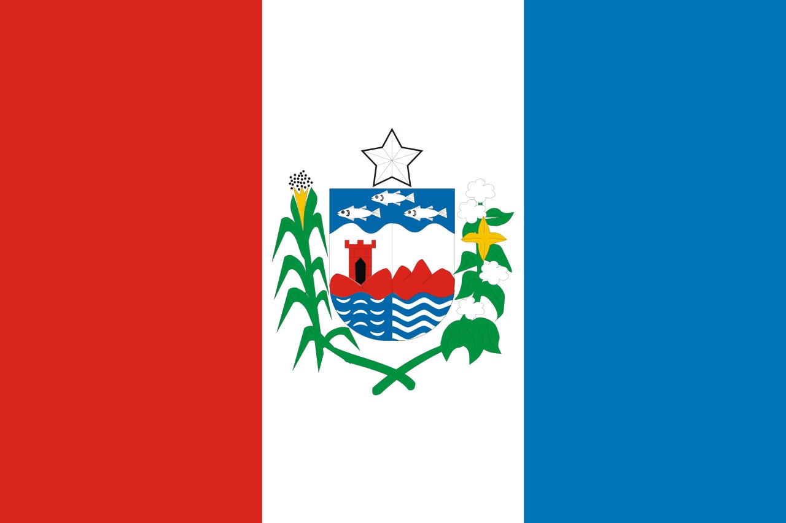

|  | Home | Notícias | Contato |
|  | |
AlagoasAlagoas é uma das 27 unidades federativas do Brasil. Está situado no leste da região Nordeste e tem como limites Pernambuco (N e NO), Sergipe (S), Bahia (SO) e o Oceano Atlântico (L). Ocupa uma área de 27.778,506 km², sendo ligeiramente maior que o Haiti. Sua capital é Maceió e a sede administrativa é o Palácio República dos Palmares. |
|
Penúltimo estado brasileiro em área (mais extenso apenas que Sergipe) e 16º em população, é um dos maiores produtores de cana-de-açúcar e coco-da-baía do país e tem na agropecuária a base de sua economia. Terra do sururu, marisco das lagoas que serve de alimento à população do litoral, e da água de coco, Alagoas possui também um dos folclores mais ricos do país. |
|